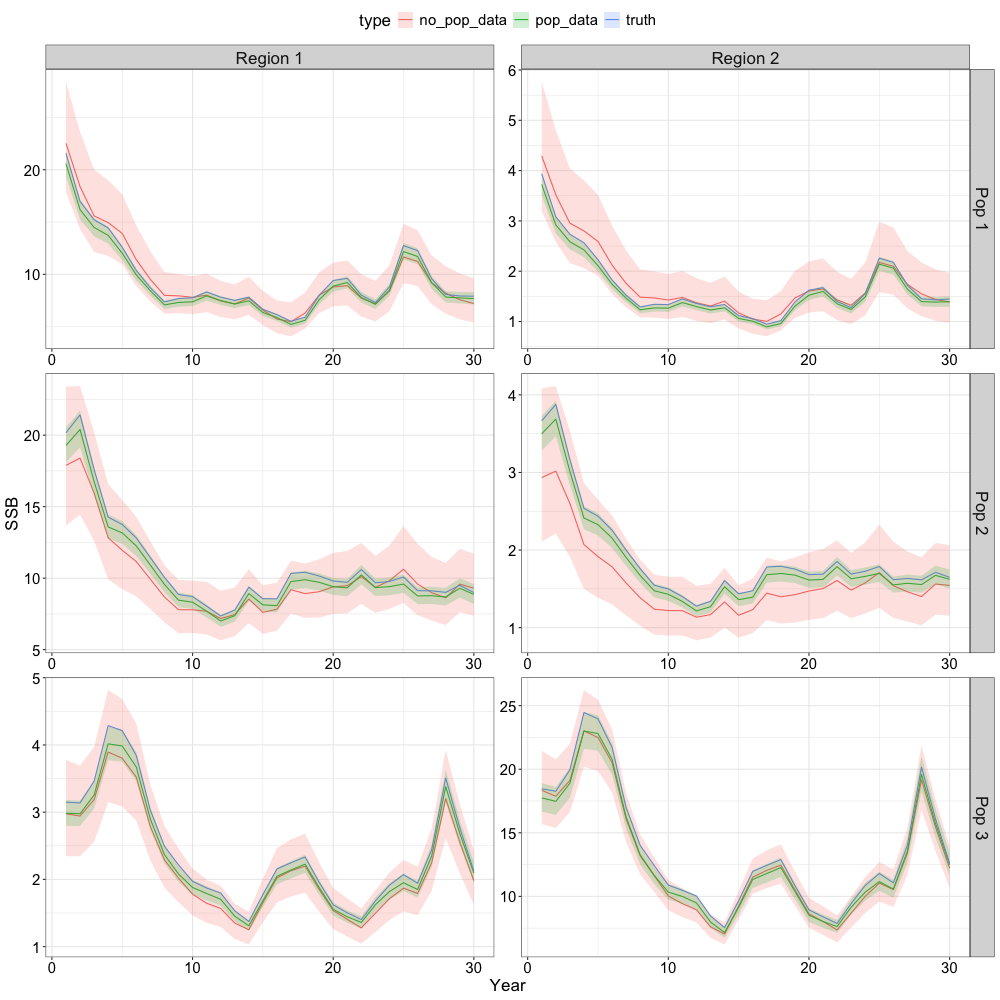
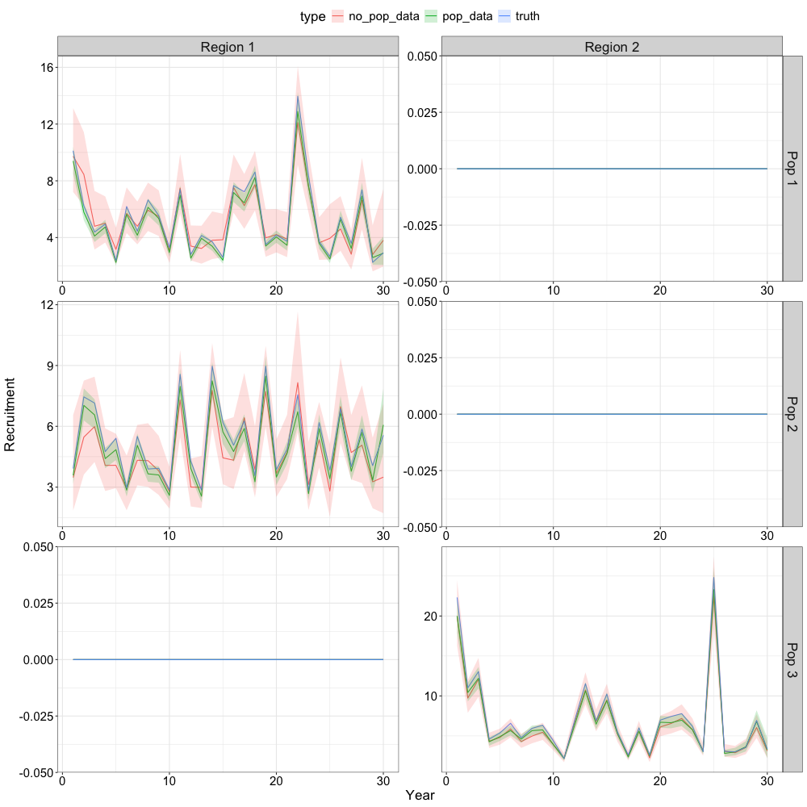

Specifying a Natal Homing Model
r_natal-homing-pop-lrgr-rg.RmdOverview
This vignette demonstrates SPoRC’s support for natal homing population structure. The scenario here has 3 populations distributed across 2 regions:
| Population | Natal Region | Recruitment Region |
|---|---|---|
| 1 | Region 1 | Region 1 |
| 2 | Region 1 | Region 1 |
| 3 | Region 2 | Region 2 |
Such a configuration is motivated by systems where fish from different origin populations intermix on common feeding grounds but return to distinct natal areas to spawn.
In the following, we simulate data under an operating model, then fit two estimation models that differ only in the data available:
-
no_pop_data, region-aggregated catch, compositions, and survey index only (although tagging is population-specific). -
pop_data, population-disaggregated catch, compositions, and survey indices, as would be available from genetic stock identification or otolith microchemistry.
The comparison illustrates the identifiability benefit of population-specific data when multiple populations share the same spatial footprint.
Operating Model Setup
Dimensions
library(SPoRC)
library(ggplot2)
library(here)
set.seed(555)
sim_list <- Setup_Sim_Dim(
n_sims = 1,
n_yrs = 30,
n_regions = 2,
n_ages = 10,
n_lens = NULL,
n_sexes = 1,
n_fish_fleets = 1,
n_srv_fleets = 1,
n_seas = 2,
n_pop = 3,
natal_region = c(1, 1, 2) # pops 1 & 2 natal to region 1; pop 3 natal to region 2
)
sim_list <- Setup_Sim_Containers(sim_list)natal_region is the key argument in
Setup_Sim_Dim where it maps each population index to the
region where that population spawns. Populations 1 and 2 both natally
home towards Region 1 and are intentionally overlapping in that they
occupy the same space but represent distinct populations
Fishing
Fishing mortality follows a sinusoidal trajectory that is out of phase between regions, producing different exploitation histories:
sim_list <- Setup_Sim_Fishing(
sim_list = sim_list,
# logistic selectivity
fish_sel_input = replicate(
n = sim_list$n_sims,
{
arr <- array(NA, dim = c(sim_list$n_pop, sim_list$n_regions, sim_list$n_yrs, sim_list$n_seas,
sim_list$n_ages, sim_list$n_sexes, sim_list$n_fish_fleets))
for (r in 1:sim_list$n_regions)
for (y in 1:sim_list$n_yrs)
for (s in 1:sim_list$n_sexes) {
for(p in 1:sim_list$n_pop) {
for(seas in 1:sim_list$n_seas) {
arr[p,r, y,seas, , s, 1] <- 1 / (1 + exp(-1.5 * (1:sim_list$n_ages - 4)))
}
}
}
arr
}
),
Fmort_input = {
n = sim_list$n_yrs * sim_list$n_seas * sim_list$n_sims * sim_list$n_fish_fleets
t = seq(0, 2*pi, length.out = n)
arr <- array(NA, dim = c(sim_list$n_regions, sim_list$n_yrs, sim_list$n_seas,
sim_list$n_fish_fleets, sim_list$n_sims))
arr[1,,,,] <- 0.15 * exp(sin(t) + rnorm(n, 0, 0.1)) # region 1 higher F, peaks early
arr[2,,,,] <- 0.05 * exp(-sin(t) + rnorm(n, 0, 0.1)) # region 2 lower F, peaks late
arr
},
# Fishery Age ISS
ISS_FishAgeComps = array(500, dim = c(sim_list$n_regions, sim_list$n_yrs, sim_list$n_seas, sim_list$n_sexes,
sim_list$n_fish_fleets, sim_list$n_sims)),
ISS_FishAgeComps_pop = array(round(500 / sim_list$n_pop), dim = c(sim_list$n_pop, sim_list$n_regions,
sim_list$n_yrs, sim_list$n_seas, sim_list$n_sexes,
sim_list$n_fish_fleets, sim_list$n_sims)),
# Sigma for catch
ln_sigmaC = array(log(0.01), dim = c(sim_list$n_regions, sim_list$n_yrs, sim_list$n_seas, sim_list$n_fish_fleets)),
ln_sigmaC_pop = array(log(0.01), dim = c(sim_list$n_pop, sim_list$n_regions, sim_list$n_yrs, sim_list$n_seas, sim_list$n_fish_fleets))
)Survey
sim_list <- Setup_Sim_Survey(
sim_list = sim_list,
# Logistic selectivity
srv_sel_input = replicate(
n = sim_list$n_sims,
{
arr <- array(NA, dim = c(sim_list$n_pop, sim_list$n_regions, sim_list$n_yrs, sim_list$n_seas,
sim_list$n_ages, sim_list$n_sexes, sim_list$n_srv_fleets))
for (r in 1:sim_list$n_regions)
for (y in 1:sim_list$n_yrs)
for (s in 1:sim_list$n_sexes) {
for(p in 1:sim_list$n_pop) {
for(seas in 1:sim_list$n_seas) {
arr[p,r, y,seas, , s, 1] <- 1 / (1 + exp(-1 * (1:sim_list$n_ages - 2.5)))
}
}
}
arr
}
),
# Survey Age ISS
ISS_SrvAgeComps = array(500, dim = c(sim_list$n_regions, sim_list$n_yrs, sim_list$n_seas, sim_list$n_sexes,
sim_list$n_srv_fleets, sim_list$n_sims)),
ISS_SrvAgeComps_pop = array(round(500 / sim_list$n_pop), dim = c(sim_list$n_pop, sim_list$n_regions,
sim_list$n_yrs, sim_list$n_seas, sim_list$n_sexes,
sim_list$n_srv_fleets, sim_list$n_sims)),
# Sigma for Survey Index
ObsSrvIdx_SE = array(0.15, dim = c(sim_list$n_regions, sim_list$n_yrs, sim_list$n_seas, sim_list$n_srv_fleets)),
ObsSrvIdx_pop_SE = array(0.15, dim = c(sim_list$n_pop, sim_list$n_regions,
sim_list$n_yrs, sim_list$n_seas, sim_list$n_srv_fleets))
)Biological Parameters
All populations share the same von Bertalanffy growth curve and maturity schedule for simplicity. Natural mortality is set at for all populations, regions, ages, and years.
sim_list <- Setup_Sim_Biologicals(
sim_list = sim_list,
# Natural Mortality
natmort_input = array(0.3, dim = c(sim_list$n_pop, sim_list$n_regions,
sim_list$n_yrs, sim_list$n_ages,
sim_list$n_sexes, sim_list$n_sims)),
# Weight at age - Same for all pops
WAA_input = replicate(
n = sim_list$n_sims,
array(
rep(5 / (1 + exp(-3 * ((1:sim_list$n_ages) - 3))),
each = sim_list$n_pop * sim_list$n_regions * sim_list$n_yrs * sim_list$n_seas,
times = sim_list$n_sexes),
dim = c(sim_list$n_pop, sim_list$n_regions, sim_list$n_yrs,
sim_list$n_seas, sim_list$n_ages, sim_list$n_sexes)
)
),
# Fishery weight at age - same as WAA_input
WAA_fish_input = replicate(
n = sim_list$n_sims,
array(
rep(5 / (1 + exp(-3 * ((1:sim_list$n_ages) - 3))),
each = sim_list$n_pop * sim_list$n_regions * sim_list$n_yrs * sim_list$n_seas,
times = sim_list$n_sexes * sim_list$n_fish_fleets),
dim = c(sim_list$n_pop, sim_list$n_regions, sim_list$n_yrs, sim_list$n_seas, sim_list$n_ages, sim_list$n_sexes, sim_list$n_fish_fleets)
)
),
# Survey weight at age - same as WAA_input
WAA_srv_input = replicate(
n = sim_list$n_sims,
array(
rep(5 / (1 + exp(-3 * ((1:sim_list$n_ages) - 3))),
each = sim_list$n_pop * sim_list$n_regions * sim_list$n_yrs * sim_list$n_seas,
times = sim_list$n_sexes * sim_list$n_srv_fleets),
dim = c(sim_list$n_pop, sim_list$n_regions, sim_list$n_yrs, sim_list$n_seas, sim_list$n_ages, sim_list$n_sexes, sim_list$n_srv_fleets)
)
),
# Maturity at age
MatAA_input = replicate(
n = sim_list$n_sims,
array(
rep(1 / (1 + exp(-3 * ((1:sim_list$n_ages) - 3))),
each = sim_list$n_pop * sim_list$n_regions * sim_list$n_yrs * sim_list$n_seas,
times = sim_list$n_sexes),
dim = c(sim_list$n_pop, sim_list$n_regions, sim_list$n_yrs, sim_list$n_seas, sim_list$n_ages, sim_list$n_sexes)
)
)
)Tagging
Conventional tagging is enabled with 1,000 releases and a Poisson recapture likelihood, with a maximum liberty period of 10 years. Note that tagging data incorporate information about the origin population.
sim_list <- Setup_Sim_Tagging(
sim_list = sim_list,
use_conv_fish_tagging = 1,
n_tags = 1e3,
conv_tag_max_liberty = 10,
conv_fish_tag_like = "Poisson"
)Movement
Movement is parameterized with two seasons and three populations. The seasonal structure captures two distinct behavioral phases:
- Season 1 (dispersal): diffusive mixing, each population has a moderate probability of remaining in its current region, with the remainder spread uniformly to other regions.
- Season 2 (natal return): strong homing back to the natal region with a small rate of homing natally.
Because a proportion of individuals do not natally home, a stray rate an be specified to represent components of the population that temporarily transfer population memerbship. By default, this is set at 0, and thus, individuals do not stray. Rather, individuals that do not natally home essentially represent skipped spawning (i.e., do not contribute to spawning biomass).
sim_list$Movement <- array(
0,
dim = c(sim_list$n_pop, sim_list$n_regions, sim_list$n_regions,
sim_list$n_yrs, sim_list$n_seas, sim_list$n_ages,
sim_list$n_sexes, sim_list$n_sims)
)
# Fill in movement matrix
stay_prob <- c(0.7, 0.3, 0.7) # probability of staying in current region during dispersal season
disperse_prob <- (1 - stay_prob) / (sim_list$n_regions - 1) # spread remainder equally
non_natal_rate <- 0.15 # non natal homing rate
for (p in seq_len(sim_list$n_pop)) {
nr <- sim_list$natal_region[p]
for (r_from in seq_len(sim_list$n_regions)) {
# Season 1: diffusive dispersal, mostly stay, some movement out
for (r_to in seq_len(sim_list$n_regions)) {
prob <- if (r_to == r_from) stay_prob[p] else disperse_prob[p]
sim_list$Movement[p, r_from, r_to, , 1, , , ] <- prob
}
# Season 2: natal return with straying
for (r_to in seq_len(sim_list$n_regions)) {
prob <- if (r_to == nr) 1 - non_natal_rate * (sim_list$n_regions - 1) else non_natal_rate
sim_list$Movement[p, r_from, r_to, , 2, , , ] <- prob
}
}
}Note that populations 1 and 2 have different dispersal retention probabilities (0.7 vs 0.3) despite sharing the same natal region, creating distinct mixing dynamics for two co-occurring populations.
Recruitment
Beverton-Holt recruitment with local density dependence
(rec_dd = 'local').
and steepness are specified per population × natal region cell; all
other cells are zero. Spawning occurs at midpoint of season 2.
sim_list <- Setup_Sim_Rec(
sim_list = sim_list,
R0_input = {
R0_arry <- array(0, dim = c(sim_list$n_pop, sim_list$n_regions, sim_list$n_yrs, sim_list$n_sims))
R0_arry[1, 1, , ] <- 7 # pop 1 recruits to region 1
R0_arry[2, 1, , ] <- 7 # pop 2 recruits to region 1
R0_arry[3, 2, , ] <- 7 # pop 3 recruits to region 2
R0_arry
},
ln_sigmaR = array(log(0.5), dim = c(2, sim_list$n_pop, sim_list$n_regions)),
init_age_strc = "matrix",
recruitment_opt = 'bh_rec',
rec_dd = 'local',
spawn_seas = 2,
t_spawn = 0.5,
h_input = {
h_arry <- array(NA, dim = c(sim_list$n_pop, sim_list$n_regions, sim_list$n_yrs, sim_list$n_sims))
h_arry[1, 1, , ] <- 0.75 # pop 1 in region 1
h_arry[2, 1, , ] <- 0.75 # pop 2 in region 1
h_arry[3, 2, , ] <- 0.75 # pop 3 in region 2
h_arry
}
)Simulate
sim_obj <- Simulate_Pop_Static(sim_list = sim_list, output_path = NULL)Estimation Model Setup
A single setup_em() function constructs both estimation
models. The use_pop_specific_cat_comps flag toggles whether
population-disaggregated data are passed in. Both models estimate
movement freely (use_fixed_movement = 0) and share the same
selectivity,
,
and recruitment parameterization.
Key estimation choices include:
| Component | Specification |
|---|---|
Estimated constant (est_ln_M) |
|
| Steepness | Fixed at true value |
| Fixed at true value | |
rec_region_prop_spec |
Specified at no_dispersal as in the
operating model. However, this can be relaxed, by allowing
population-specific recruitment dispersal proportions if desired |
| Initial age structure | Matrix geometric series; all deviations shared by region |
| Movement | Estimated; 3 population blocks × 2 season blocks |
| Tag reporting rate | Estimated, shared by region |
| Fishery / survey selectivity | Logistic, shared by region |
| Survey | Estimated, shared by region |
setup_em <- function(sim_obj, sim, use_pop_specific_cat_comps) {
# Extract simulation data for current year and replicate
sim_data <- simulation_data_to_SPoRC(sim_env = sim_obj, y = sim_obj$n_yrs, sim = sim)
# Setup model dimensions
input_list <- Setup_Mod_Dim(
years = 1:sim_obj$n_years,
ages = 1:sim_obj$n_ages,
lens = sim_obj$n_lens,
n_regions = sim_obj$n_regions,
n_sexes = sim_obj$n_sexes,
n_fish_fleets = sim_obj$n_fish_fleets,
n_srv_fleets = sim_obj$n_srv_fleets,
n_seas = sim_obj$n_seas,
n_pop = sim_obj$n_pop,
seasdur = sim_obj$seasdur,
natal_region = c(1,1,2),
verbose = FALSE
)
input_list <- Setup_Mod_Rec(
input_list = input_list,
do_rec_bias_ramp = 0,
sigmaR_switch = 1,
init_age_strc = "matrix",
equil_init_age_strc = "stoch_all",
# spawning dynamics
spawn_seas = sim_obj$spawn_seas,
t_spawn = sim_obj$t_spawn,
rec_model = "bh_rec",
sigmaR_spec = "fix",
rec_dd = 'local',
InitDevs_spec = "est_shared_r",
RecDevs_spec = "est_shared_r",
sexratio_spec = "fix",
rec_region_prop_spec = 'no_dispersal',
h_spec = 'fix',
# starting values / fixed parameters
steepness_h = {
h_arry <- array(0, dim = c(sim_list$n_pop, sim_list$n_regions))
h_arry[1,1] <- qlogis((0.75 - 0.2) / 0.8)
h_arry[2,1] <- qlogis((0.75 - 0.2) / 0.8)
h_arry[3,2] <- qlogis((0.75 - 0.2) / 0.8)
h_arry
},
ln_sigmaR = array(log(0.5), dim = c(2, sim_list$n_pop, sim_list$n_regions)),
ln_global_R0 = array(c(log(7), log(5), log(10)), dim = input_list$data$n_pop)
)
# Biological setup
input_list <- Setup_Mod_Biologicals(
input_list = input_list,
WAA = sim_data$WAA,
MatAA = sim_data$MatAA,
WAA_fish = sim_data$WAA_fish,
WAA_srv = sim_data$WAA_srv,
fit_lengths = 0,
AgeingError = sim_data$AgeingError,
M_spec = "est_ln_M"
)
# Movement and tagging
input_list <- Setup_Mod_Tagging(input_list = input_list,
use_conv_fish_tagging = 1,
conv_tagged_fish = sim_data$conv_tagged_fish_attr,
conv_tag_max_liberty = dim(sim_data$obs_conv_tag_fish_recap)[1],
obs_conv_tag_fish_recap = sim_data$obs_conv_tag_fish_recap,
conv_fish_tag_like = 'Poisson',
init_conv_tag_mort_spec = 'fix',
conv_tag_shed_spec = 'fix',
conv_tagrep_spec = 'est_shared_r',
conv_fish_tag_attr = "p_a_s",
conv_tag_release_indicator = sim_data$conv_tag_release_indicator
)
input_list <- Setup_Mod_Movement(
input_list = input_list,
do_recruits_move = 0,
use_fixed_movement = 0,
Movement_popblk_spec = list(1,2,3),
Movement_seasblk_spec = list(1,2)
)
# Catch & F ---------------------------------------------------------------
if(use_pop_specific_cat_comps) {
input_list <- Setup_Mod_Catch_and_F(
input_list = input_list,
ObsCatch = sim_data$ObsCatch,
UseCatch = array(0, dim = dim(sim_data$UseCatch)),
ObsCatch_pop = sim_data$ObsCatch_pop,
UseCatch_pop = sim_data$UseCatch_pop,
Use_F_pen = 1,
sigmaC_spec = "fix",
sigmaC_pop_spec = 'fix',
ln_sigmaC = sim_data$ln_sigmaC,
ln_sigmaC_pop = sim_data$ln_sigmaC_pop,
ln_sigmaF = array(log(1), dim = c(input_list$data$n_regions,
input_list$data$n_seas,
input_list$data$n_fish_fleets))
)
} else {
input_list <- Setup_Mod_Catch_and_F(
input_list = input_list,
ObsCatch = sim_data$ObsCatch,
UseCatch = array(1, dim = dim(sim_data$UseCatch)),
Use_F_pen = 1,
sigmaC_pop_spec = 'fix',
sigmaF_spec = 'fix',
ln_sigmaC = sim_data$ln_sigmaC,
ln_sigmaC_pop = sim_data$ln_sigmaC_pop,
ln_sigmaF = array(log(1), dim = c(input_list$data$n_regions,
input_list$data$n_seas,
input_list$data$n_fish_fleets))
)
}
# Fishery index & comps ---------------------------------------------------
if(use_pop_specific_cat_comps) {
input_list <- Setup_Mod_FishIdx_and_Comps(
input_list = input_list,
ObsFishIdx = sim_data$ObsFishIdx,
ObsFishIdx_SE = sim_data$ObsFishIdx_SE,
UseFishIdx = array(0, dim = dim(sim_data$UseFishIdx)),
ObsFishAgeComps = sim_data$ObsFishAgeComps,
ObsFishLenComps = sim_data$ObsFishLenComps,
UseFishAgeComps = array(0, dim = dim(sim_data$UseFishAgeComps)),
UseFishLenComps = sim_data$UseFishLenComps,
ISS_FishAgeComps = sim_data$ISS_FishAgeComps,
ISS_FishLenComps = sim_data$ISS_FishLenComps,
ObsFishAgeComps_pop = sim_data$ObsFishAgeComps_pop,
UseFishAgeComps_pop = sim_data$UseFishAgeComps_pop,
ISS_FishAgeComps_pop = sim_data$ISS_FishAgeComps_pop,
FishAgeComps_pop_LikeType = c("Multinomial"),
FishAgeComps_pop_Type = c("spltRjntS_Year_1-terminal_Fleet_1"),
fish_idx_type = 'none',
FishAgeComps_LikeType = c("Multinomial"),
FishLenComps_LikeType = c("none"),
FishAgeComps_Type = c("spltRjntS_Year_1-terminal_Fleet_1"),
FishLenComps_Type = c("none_Year_1-terminal_Fleet_1")
)
} else {
input_list <- Setup_Mod_FishIdx_and_Comps(
input_list = input_list,
ObsFishIdx = sim_data$ObsFishIdx,
ObsFishIdx_SE = sim_data$ObsFishIdx_SE,
UseFishIdx = array(0, dim = dim(sim_data$UseFishIdx)),
ObsFishAgeComps = sim_data$ObsFishAgeComps,
ObsFishLenComps = sim_data$ObsFishLenComps,
UseFishAgeComps = sim_data$UseFishAgeComps,
UseFishLenComps = sim_data$UseFishLenComps,
ISS_FishAgeComps = sim_data$ISS_FishAgeComps,
ISS_FishLenComps = sim_data$ISS_FishLenComps,
fish_idx_type = 'none',
FishAgeComps_LikeType = c("Multinomial"),
FishLenComps_LikeType = c("none"),
FishAgeComps_Type = c("spltRjntS_Year_1-terminal_Fleet_1"),
FishLenComps_Type = c("none_Year_1-terminal_Fleet_1")
)
}
# Survey index & comps ----------------------------------------------------
if(use_pop_specific_cat_comps) {
input_list <- Setup_Mod_SrvIdx_and_Comps(
input_list = input_list,
ObsSrvIdx = sim_data$ObsSrvIdx,
ObsSrvIdx_SE = sim_data$ObsSrvIdx_SE,
UseSrvIdx = array(0, dim = dim(sim_data$UseSrvIdx)),
ObsSrvIdx_pop = sim_data$ObsSrvIdx_pop,
ObsSrvIdx_pop_SE = sim_data$ObsSrvIdx_pop_SE,
UseSrvIdx_pop = array(1, dim = dim(sim_data$UseSrvIdx_pop)),
ObsSrvAgeComps = sim_data$ObsSrvAgeComps,
ObsSrvLenComps = sim_data$ObsSrvLenComps,
UseSrvAgeComps = array(0, dim = dim(sim_data$UseSrvAgeComps)),
UseSrvLenComps = sim_data$UseSrvLenComps,
ISS_SrvAgeComps = sim_data$ISS_SrvAgeComps,
ISS_SrvLenComps = sim_data$ISS_SrvLenComps,
ObsSrvAgeComps_pop = sim_data$ObsSrvAgeComps_pop,
UseSrvAgeComps_pop = sim_data$UseSrvAgeComps_pop,
ISS_SrvAgeComps_pop = sim_data$ISS_SrvAgeComps_pop,
SrvAgeComps_pop_LikeType = c("Multinomial"),
SrvAgeComps_pop_Type = c("spltRjntS_Year_1-terminal_Fleet_1"),
srv_idx_type = c("biom"),
SrvAgeComps_LikeType = c("Multinomial"),
SrvLenComps_LikeType = c("none"),
SrvAgeComps_Type = c("spltRjntS_Year_1-terminal_Fleet_1"),
SrvLenComps_Type = c("none_Year_1-terminal_Fleet_1")
)
} else {
input_list <- Setup_Mod_SrvIdx_and_Comps(
input_list = input_list,
ObsSrvIdx = sim_data$ObsSrvIdx,
ObsSrvIdx_SE = sim_data$ObsSrvIdx_SE,
UseSrvIdx = sim_data$UseSrvIdx,
ObsSrvAgeComps = sim_data$ObsSrvAgeComps,
ObsSrvLenComps = sim_data$ObsSrvLenComps,
UseSrvAgeComps = sim_data$UseSrvAgeComps,
UseSrvLenComps = sim_data$UseSrvLenComps,
ISS_SrvAgeComps = sim_data$ISS_SrvAgeComps,
ISS_SrvLenComps = sim_data$ISS_SrvLenComps,
srv_idx_type = c("biom"),
SrvAgeComps_LikeType = c("Multinomial"),
SrvLenComps_LikeType = c("none"),
SrvAgeComps_Type = c("spltRjntS_Year_1-terminal_Fleet_1"),
SrvLenComps_Type = c("none_Year_1-terminal_Fleet_1")
)
}
input_list <- Setup_Mod_Fishsel_and_Q(
input_list = input_list,
fish_sel_model = c("logist1_Fleet_1"),
fish_fixed_sel_pars_spec = c("est_shared_r"),
fish_q_spec = c("fix")
)
input_list <- Setup_Mod_Srvsel_and_Q(
input_list = input_list,
srv_sel_model = c("logist1_Fleet_1"),
srv_fixed_sel_pars_spec = c("est_shared_r"),
srv_q_spec = c("est_shared_r")
)
# Weighting ---------------------------------------------------------------
if(use_pop_specific_cat_comps) {
input_list <- Setup_Mod_Weighting(
input_list = input_list,
Wt_Catch = 1,
Wt_Catch_pop = 1,
Wt_SrvIdx_pop = 1,
Wt_FishIdx = 1,
Wt_SrvIdx = 1,
Wt_Rec = 1,
Wt_F = 1,
Wt_Tagging = 1,
Wt_FishAgeComps = array(0, dim = c(input_list$data$n_regions, length(input_list$data$years),
input_list$data$n_seas, input_list$data$n_sexes, input_list$data$n_fish_fleets)),
Wt_SrvAgeComps = array(0, dim = c(input_list$data$n_regions, length(input_list$data$years),
input_list$data$n_seas, input_list$data$n_sexes, input_list$data$n_srv_fleets)),
Wt_FishAgeComps_pop = array(1, dim = c(input_list$data$n_pop, input_list$data$n_regions, length(input_list$data$years),
input_list$data$n_seas, input_list$data$n_sexes, input_list$data$n_fish_fleets)),
Wt_SrvAgeComps_pop = array(1, dim = c(input_list$data$n_pop, input_list$data$n_regions, length(input_list$data$years),
input_list$data$n_seas, input_list$data$n_sexes, input_list$data$n_srv_fleets))
)
} else {
input_list <- Setup_Mod_Weighting(
input_list = input_list,
Wt_Catch = 1,
Wt_Catch_pop = 1,
Wt_FishIdx = 1,
Wt_SrvIdx = 1,
Wt_Rec = 1,
Wt_F = 1,
Wt_Tagging = 1,
Wt_FishAgeComps = array(1, dim = c(input_list$data$n_regions, length(input_list$data$years),
input_list$data$n_seas, input_list$data$n_sexes, input_list$data$n_fish_fleets)),
Wt_SrvAgeComps = array(1, dim = c(input_list$data$n_regions, length(input_list$data$years),
input_list$data$n_seas, input_list$data$n_sexes, input_list$data$n_srv_fleets))
)
}
return(input_list)
}Fitting
Both models are fit with fit_model() and standard errors
are obtained via sdreport().
# Aggregated data only
input_list <- setup_em(sim_obj, sim = 1, use_pop_specific_cat_comps = FALSE)
non_pop_obj <- fit_model(input_list$data, input_list$par, input_list$map,
NULL, 3, silent = FALSE, do_optim = TRUE)
non_pop_obj$sd_rep <- sdreport(non_pop_obj)
# Population-disaggregated data
input_list <- setup_em(sim_obj, sim = 1, use_pop_specific_cat_comps = TRUE)
pop_obj <- fit_model(input_list$data, input_list$par, input_list$map,
NULL, 3, silent = FALSE, do_optim = T)
pop_obj$sd_rep <- sdreport(pop_obj)
ssb_comp <- rbind(
reshape2::melt(non_pop_obj$rep$SSB) %>%
mutate(type = "no_pop_data",
se = non_pop_obj$sd_rep$sd[names(non_pop_obj$sd_rep$value) == "log_SSB"]),
reshape2::melt(pop_obj$rep$SSB) %>%
mutate(type = "pop_data",
se = pop_obj$sd_rep$sd[names(pop_obj$sd_rep$value) == "log_SSB"]),
reshape2::melt(sim_obj$SSB[, , , 1]) %>%
mutate(type = "truth", se = NA)
) %>%
rename(Pop = Var1, Region = Var2, Year = Var3) %>%
mutate(Pop = paste("Pop", Pop),
Region = paste("Region", Region))
ggplot(ssb_comp, aes(x = Year, y = value, color = type, fill = type)) +
geom_line(aes(group = interaction(type, Pop, Region))) +
geom_ribbon(
aes(
ymin = exp(log(value) - 1.96 * se),
ymax = exp(log(value) + 1.96 * se),
group = interaction(type, Pop, Region)
),
alpha = 0.2, color = NA
) +
ggh4x::facet_grid2(Pop ~ Region, scales = "free", independent = "all") +
theme_sablefish() +
labs(y = "SSB")
rec_comp <- rbind(
reshape2::melt(non_pop_obj$rep$Rec) %>%
mutate(type = "no_pop_data",
se = non_pop_obj$sd_rep$sd[names(non_pop_obj$sd_rep$value) == "log_Rec"]),
reshape2::melt(pop_obj$rep$Rec) %>%
mutate(type = "pop_data",
se = pop_obj$sd_rep$sd[names(pop_obj$sd_rep$value) == "log_Rec"]),
reshape2::melt(sim_obj$Rec[, , , 1]) %>%
mutate(type = "truth", se = NA)
) %>%
rename(Pop = Var1, Region = Var2, Year = Var3) %>%
mutate(Pop = paste("Pop", Pop),
Region = paste("Region", Region))
ggplot(rec_comp, aes(x = Year, y = value, color = type, fill = type)) +
geom_line(aes(group = interaction(type, Pop, Region))) +
geom_ribbon(
aes(
ymin = exp(log(value) - 1.96 * se),
ymax = exp(log(value) + 1.96 * se),
group = interaction(type, Pop, Region)
),
alpha = 0.2, color = NA
) +
ggh4x::facet_grid2(Pop ~ Region, scales = "free", independent = "all") +
theme_sablefish() +
labs(y = "Recruitment")
With mostly region-aggregated data, the model has little direct information about which recruits belong to which population or where they originated (except for tagging data). When multiple populations co-occur in the same region, as populations 1 and 2 do in Region 1 here, the aggregated age compositions and survey indices carry a mixed signal, and the model must attempt to decompose it using movement dynamics, tagging data, and spatial contrast alone (as well as fixed parameters). However, incorporating population-specific data greatly enhances the identifiability of this model, which results in improved estimates of spawning stock biomass and recruitment relative to the truth.